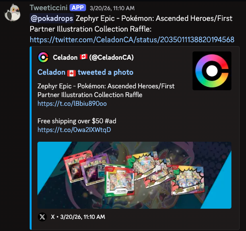

Tweeticcini
Twitter/X alert routing for Discord
Real-time Twitter/X alerts for Discord, with the control you want and none of the noise.
Follow the accounts that matter, filter low-value posts before they hit chat, and deliver the right alerts to the right people.
- 📡 Follow the Twitter/X accounts your server actually cares about
- 🎯 Filter noise, route alerts cleanly, and escalate urgent posts when needed
- 🧠 Manage monitors, rules, appearance, and billing in one place
See alerts land your way
Configure the routing, mention style, and delivery format in the dashboard, then let Tweeticcini handle the final post in Discord.

Simple plans, no speed gating
$9/monthFree and Premium both run on speedy 12-second tweet checks, so upgrading is about more control and power, not more speed.
✨ Try Premium risk-free for 7 days
| Free | Premium | |
|---|---|---|
| Fast polling speed | ✓ | ✓ |
| Account monitors | 3 | 25 |
| Delivery rules | 3 | 50 |
| Muted phrases | 5 | 500 |
@everyone alerts |
✕ | ✓ |
| Escalation phrases | ✕ | 150 |
| Custom messages | ✕ | ✓ |
| Delivery styling | ✕ | ✓ |
Get Live Quickly
Set up Tweeticcini in minutes
Add the bot, open the dashboard, connect a Twitter/X session, and build the alert flow your server actually needs.